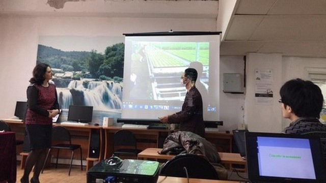
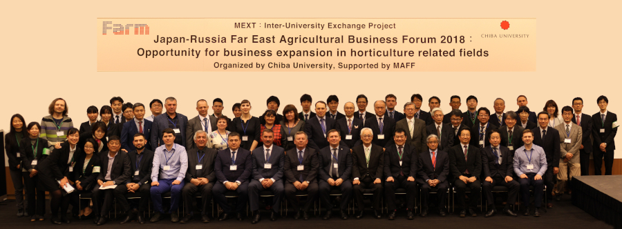
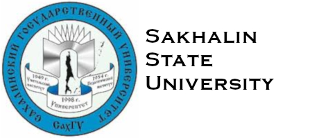

-
日本留学海外拠点連携推進事業主催 日本留学フェア（於ロシア連邦・ハバロフスク ）

ハバロフスクを訪問して展覧会に参加する
-
施設園芸シンポジウム

【テーマ】
日本における施設園芸技術開発の動向と極東ロシアとの連携の可能性
Ⅰ. 研究情報及び今後の可能性について情報交換を行う
Ⅱ. 極東エリアにおける日本技術の可能性、課題、方向性について情報交換を行う
-
プリモルスキー州立農業アカデミーの先生がやってきた

その過程で、Plant Factoryで植物を栽培するためのさまざまな栄養溶液の使用に関する新しい知識が得られました。
-
サハリン州立大学からの交換留学生が来ました

サハリン州立大学からの交換留学生の第二部はFARMプログラムの下でコースに来ました。 2週間のコースの間、彼らは人工光でPlant Factoryについて学びました
-
プリモルスカヤ州立農業アカデミーを訪問

千葉大学の交換留学生の第二部は、プリモルスカヤ州立農業アカデミーを訪問しました。
-
サハリン州立大学訪問

千葉大学の交換留学生の第二部は、サハリン州立研究所に行きました。
-
プリモルスカヤ州立農業アカデミーからの交換留学生が来ました

プリモルスカヤ州立農業アカデミーからの交換留学生の第2部は、FARMプログラムのもとでコースに参加しました。 2週間のコースの間、彼らは人工光でPlant Factoryについて学びました。
-
サハリン州立大学を訪問

千葉大学の学生はサハリン州立大学へ行きました。
-
プリモルスカヤ州立農業アカデミーを訪問
千葉大学の学生が、プリモルスカヤ州立農業アカデミーに行きました
-
FARMプログラム内の最初のビジネスフォーラム
このフォーラムには、日本の専門家、機関、企業の代表者、そしてロシアの提携機関の代表者が出席しました。
-
サハリン州立大学との合意
サハリン州立大学が千葉大学にやって来ました。 FARMプログラムの枠内で協力協定が締結されました。
 -
サハリン州立大学からの交換留学生の前半は

サハリン州立大学が千葉大学にやってきた。 FARMプログラムの枠内で協力協定が締結されました。
-
プリモルスカヤ州立農業アカデミーからの交換留学生の最初の部分が来ました

最初の学生はFARMプログラムの下でコースに来ました。 2週間のコースの間、彼らは人工光でPlant Factoryについて学びました。
-
プリモルスカヤ州立農業アカデミーを訪問
千葉大学代表団は、プリモルスカヤ州立農業アカデミーに行きました。
-
プリモルスカヤ州立農業アカデミーとの合意
プリモルスカヤ州立農業アカデミーが千葉大学にやって来ました。 FARMプログラムの枠内で協力協定が締結されました。

-
FARMプログラムの起動
FARMプロジェクトの公式スタート
-
プログラムディスカッション
2017年には、FARMプログラムを開始することが決定されました。 このプログラムは、千葉大学環境健康フィールド科学センターで始まりました。